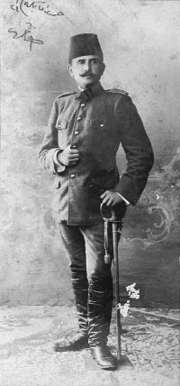

İstanbul’da Meşrutiyet aleyhtarlarının, gerek sarayın gerekse dış düşmanlarımızın teşviki ile bir irtica yaparak Meşrutiyet taraftarlarını boğmak isteyeceklerini hiçbir zaman düşüncemden uzak tutmadım. Fakat bunu İttihat ve Terakki umumi merkezine ve İstanbul’a gelen murahhaslarına anlatamadım. Bunun üzerine en mühim bir merkez olan Edirne’de toplu bulunan üçüncü fırka erkân-ı harpliğine gelmekliğimi, oradaki samimi arkadaşlarımın da arzusu eklenmesiyle kabul ettim. İlk iş, Dedeağaç’tan Çatalca’ya kadar şimendifer muhafızlığına konmuş olan İstanbul’dan gelmiş alaylı zabitler kumandasındaki taburları mektepli ellere verdirdim. Gece gündüz zabit ve efratla çalışarak bütün ruhlarıyla kendime bağladım. Bu bağlar o kadar kuvvetli idi ki, vakit vakit ve bilhassa İstanbul’da irtica çıktığı zaman bütün fırkamla askerlerim benim emrimden çıkmayacaklarını her vasıta ile bana bildirdiler. Edirne’ye irtica haberi geldiği zaman her tarafta büyük bir şaşkınlık başladı. Çünkü haftalardan beri alınan haberler irticaın Trakya’da da çıkacağını gösteriyordu.

Kâzım Karabekir
1909
İttihat ve Terakki merkezinde bulunan arkadaşlar, ki bir kısmı zabitti, etrafıma toplanarak vaziyetin vahimliğini ve bunun karşısında benden medet beklediklerini söylediler.
Dedim:
— Evvela ilk trenle İstanbul’a iki arkadaş gönderelim, ve irticaın mahiyetini anlayalım. Olmasın ki oraca bastırılması mümkün bir şeydir. Fırka gayreti ile İttihatçılar orduları harekete getirerek felâkete sebep olsunlar. Ben de fırkamın hareketi için lazım gelen hazırlıklara başlayayım. Buraca yapılacak şey, birincisi sükûnettir. Telaş gösterilmemeli. İkincisi bazı arkadaşların nefer kıyafetine girerek askerleri yakından dinlemeleridir. Ben kendi fırkamdan eminim. Diğer garnizonun kıtaları sıkı dinlenmeli ve zabitler sıkı temasta bulunmalıdır.
Teklifim kabul edildi. Bizim evde toplanmıştık. Burada İsmet, Seyfi, Jandarma Yüzbaşı Rafet, Topçu Yüzbaşı Sabri, sivillerden Faik beyler de vardı. Topçu Yüzbaşı Sabri Bey’le Faik Bey’in İstanbul’a kıyafet değiştirerek gönderilmesine karar verdik. Birkaç da açık şifre (kod) verdik.
Ertesi günü bu arkadaşlar, “annem hastadır” yani “irtica müthiştir, hareket lazımdır” şifresini verdiler.
Derhal kuvvetleri ve kıtaları hazırladık. Fırkanın kumandanı Tevfik Paşa İstanbul’da izinli idi. Liva kumandanı Şevket Turgut Paşa’ya kumandayı almasını teklif ettim. Memnuniyetle kabul ettiler. Ordu kumandanı Salih Paşa vaziyetten pek endişeli idi. Evvela kendisinin hapsedilmesini, sonra hareket edilmesini söyledi.
Dedim:
— Paşam bu hareketi yapacağız, askeri mertebe silsilesini bozmak istemiyoruz. Fakat mecbur kalırsak bunu da yapacağız. Çünkü mahvolacak yalnız Meşrutiyet değil, bütün mektepli zabitler, sonra da bütün millet ve vatandır. Değil hareketimiz için taraftar olmamak, ordunun başına geçmek sizin için büyük bir vazife ve bir şereftir. Kıtalar trene binmek üzeredir.
Ordu kumandanı bu gafı yaparken ordu erkân-ı harbiyesinden Vehip Bey (Vehip Paşa) Selanik’le makine başında daha müthişini yapmış.
Kendisi Üçüncü Ordu’dan yeni geldiğinden İkinci Ordu’nun vaziyetini ve benim mevkimi bilmiyordu. Selanik’te ordu erkân-ı harbiyesi bizim ordudan da harekete iştirak istemiş. Vehip Bey de, “Bu ordu mürteciler elindedir, buradan ümit beklemeyiniz” cevabını vermiş. Bu haber tabii Üçüncü Ordu’yu ve cemiyet umumi merkezini fena sarsmış. Bunu haber alınca, yaptığı hatayı hazırlanan kıtaları göstererek ve akşama yola çıkacağımızı bildirerek anlattım ve beraberce telgrafhaneye giderek Selanik’te Üçüncü Ordu erkan-ı harbiyesine hatasını tashih ve fırkamızın hareket etmekte olduğunu bildirdik.